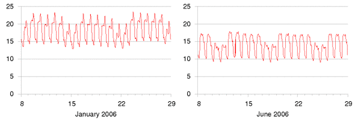
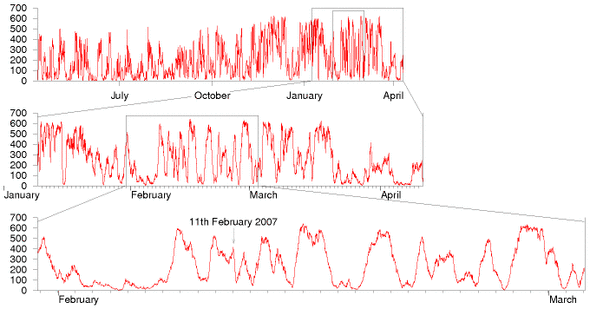
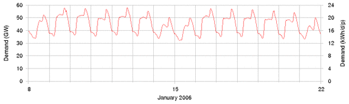
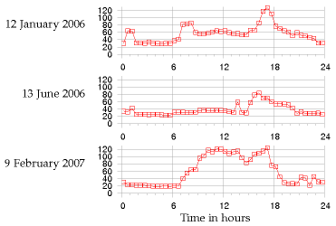
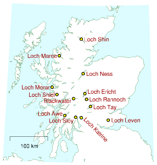
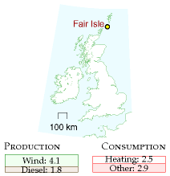
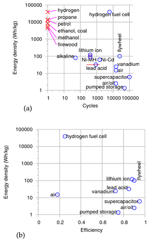
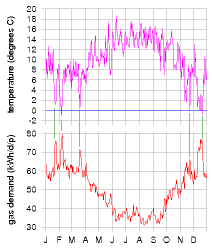
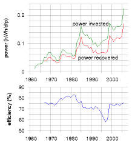
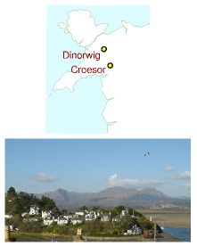

26 Fluctuations and storage
The wind, as a direct motive power, is wholly inapplicable to a system of machine labour, for during a calm season the whole business of the country would be thrown out of gear. Before the era of steam-engines, windmills were tried for draining mines; but though they were powerful machines, they were very irregular, so that in a long tract of calm weather the mines were drowned, and all the workmen thrown idle.
William Stanley Jevons, 1865

Figure 26.1. Electricity demand in Great Britain (in kWh/d per person) during two winter weeks and two summer weeks of 2006. The peaks in January are at 6pm each day. The five-day working week is evident in summer and winter. (If you’d like to obtain the national demand in GW, remember the top of the scale, 24 kWh/d per person, is the same as 60 GW per UK.)
If we kick fossil fuels and go all-out for renewables, or all-out for nuclear, or a mixture of the two, we may have a problem. Most of the big renewables are not turn-off-and-onable. When the wind blows and the sun comes out, power is there for the taking; but maybe two hours later, it’s not available any more. Nuclear power stations are not usually designed to be turn-off-and-onable either. They are usually on all the time, and their delivered power can be turned down and up only on a timescale of hours. This is a problem because, on an electricity network, consumption and production must be exactly equal all the time. The electricity grid can’t store energy. To have an energy plan that adds up every minute of every day, we therefore need something easily turn-off-and-onable. It’s commonly assumed that the easily turn-off-and-onable something should be a source of power that gets turned off and on to compensate for the fluctuations of supply relative to demand (for example, a fossil fuel power station!). But another equally effective way to match supply and demand would be to have an easily turn-off-and-onable demand for power – a sink of power that can be turned off and on at the drop of a hat.

Figure 26.2. Total output, in MW, of all wind farms of the Republic of Ireland, from April 2006 to April 2007 (top), and detail from January 2007 to April 2007 (middle), and February 2007 (bottom). Peak electricity demand in Ireland is about 5000 MW. Its wind “capacity” in 2007 is 745 MW, dispersed in about 60 wind farms. Data are provided every 15 minutes by www.eirgrid.com.
Either way, the easily turn-off-and-onable something needs to be a big something because electricity demand varies a lot (figure 26.1). The demand sometimes changes significantly on a timescale of a few minutes. This chapter discusses how to cope with fluctuations in supply and demand, without using fossil fuels.
How much do renewables fluctuate?
However much we love renewables, we must not kid ourselves about the fact that wind does fluctuate.
Critics of wind power say: “Wind power is intermittent and unpredictable, so it can make no contribution to security of supply; if we create lots of wind power, we’ll have to maintain lots of fossil-fuel power plant to replace the wind when it drops.” Headlines such as “Loss of wind causes Texas power grid emergency” reinforce this view. 1 Supporters of wind energy play down this problem: “Don’t worry – individual wind farms may be intermittent, but taken together, the sum of all wind farms in different locations is much less intermittent.” 2
Let’s look at real data and try to figure out a balanced viewpoint. Figure 26.2 shows the summed output of the wind fleet of the Republic of Ireland from April 2006 to April 2007. 3 Clearly wind is intermittent, even if we add up lots of turbines covering a whole country. The UK is a bit larger than Ireland, but the same problem holds there too. 4 Between October 2006 and February 2007 there were 17 days when the output from Britain’s 1632 windmills was less than 10% of their capacity. During that period there were five days when output was less than 5% and one day when it was only 2%.

Figure 26.3. Electricity demand in Great Britain during two winter weeks of 2006. The left and right scales show the demand in national units (GW) and personal units (kWh/d per person) respectively. These are the same data as in figure 26.1.
Let’s quantify the fluctuations in country-wide wind power. The two issues are short-term changes, and long-term lulls. Let’s find the fastest short-term change in a month of Irish wind data. On 11th February 2007, the Irish wind power fell steadily from 415 MW at midnight to 79 MW at 4am. That’s a slew rate of 84 MW per hour for a country-wide fleet of capacity 745 MW. (By slew rate I mean the rate at which the delivered power fell or rose – the slope of the graph on 11th February.) OK: if we scale British wind power up to a capacity of 33 GW (so that it delivers 10 GW on average), we can expect to have occasional slew rates of
\[ \text{84\ MW/h~} \times \ \frac{\text{33\ 000\ MW}}{\text{745\ MW}}\ = \text{~3700\ MW/h,} \]
assuming Britain is like Ireland. So we need to be able to either power up replacements for wind at a rate of 3.7 GW per hour – that’s 4 nuclear power stations going from no power to full power every hour, say – or we need to be able to suddenly turn down our demand at a rate of 3.7 GW per hour.
Could these windy demands be met? In answering this question we’ll need to talk more about “gigawatts.” Gigawatts are big country-sized units of power. They are to a country what a kilowatt-hour-per-day is to a person: a nice convenient unit. The UK’s average electricity consumption is about 40 GW. We can relate this national number to personal consumption: 1 kWh per day per person is equivalent to 2.5 GW nationally. So if every person uses 16 kWh per day of electricity, then national consumption is 40 GW.
Is a national slew-rate of 4 GW per hour completely outside human experience? No. Every morning, as figure 26.3 shows, British demand climbs by about 13 GW between 6.30am and 8.30am. That’s a slew rate of 6.5 GW per hour. So our power engineers already cope, every day, with slew rates bigger than 4GW per hour on the national grid. An extra occasional slew of 4 GW per hour induced by sudden wind variations is no reasonable cause for ditching the idea of country-sized wind farms. It’s a problem just like problems that engineers have already solved. We simply need to figure out how to match ever-changing supply and demand in a grid with no fossil fuels. I’m not saying that the wind-slew problem is already solved – just that it is a problem of the same size as other problems that have been solved.
OK, before we start looking for solutions, we need to quantify wind’s other problem: long-term lulls. At the start of February 2007, Ireland had a country-wide lull that lasted five days. This was not an unusual event, as you can see in figure 26.2. Lulls lasting two or three days happen several times a year.
There are two ways to get through lulls. Either we can store up energy somewhere before the lull, or we need to have a way of reducing demand during the entire lull. (Or a mix of the two.) If we have 33 GW of wind turbines delivering an average power of 10 GW then the amount of energy we must either store up in advance or do without during a five-day lull is
10 GW × (5 × 24 h) = 1200 GWh.
(The gigawatt-hour (GWh) is the cuddly energy unit for nations. Britain’s electricity consumption is roughly 1000 GWh per day.)
To personalize this quantity, an energy store of 1200 GWh for the nation is equivalent to an energy store of 20 kWh per person. Such an energy store would allow the nation to go without 10 GW of electricity for 5 days; or equivalently, every individual to go without 4 kWh per day of electricity for 5 days.
Coping with lulls and slews
We need to solve two problems – lulls (long periods with small renewable production), and slews (short-term changes in either supply or demand). We’ve quantified these problems, assuming that Britain had roughly 33 GW of wind power. To cope with lulls, we must effectively store up roughly 1200 GWh of energy (20 kWh per person). The slew rate we must cope with is 6.5 GW per hour (or 0.1 kW per hour per person).
There are two solutions, both of which could scale up to solve these problems. The first solution is a centralized solution, and the second is decentralized. The first solution stores up energy, then copes with fluctuations by turning on and off a source powered from the energy store. The second solution works by turning on and off a piece of demand.
The first solution is pumped storage. The second uses the batteries of the electric vehicles that we discussed in Chapter 20. Before I describe these solutions, let’s discuss a few other ideas for coping with slew.
Other supply-side ways of coping with slew
Some of the renewables are turn-off-and-onable. If we had a lot of renewable power that was easily turn-off-and-onable, all the problems of this chapter would go away. Countries like Norway and Sweden have large and deep hydroelectric supplies which they can turn on and off. What might the options be in Britain?
First, Britain could have lots of waste incinerators and biomass incinerators – power stations playing the role that is today played by fossil power stations. If these stations were designed to be turn-off-and-onable, there would be cost implications, just as there are costs when we have extra fossil power stations that are only working part-time: their generators would sometimes be idle and sometimes work twice as hard; and most generators aren’t as efficient if you keep turning them up and down, compared with running them at a steady speed. OK, leaving cost to one side, the crucial question is how big a turn-off-and-onable resource we might have. If all municipal waste were incinerated, and an equal amount of agricultural waste were incinerated, then the average power from these sources would be about 3 GW. If we built capacity equal to twice this power, making incinerators capable of delivering 6 GW, and thus planning to have them operate only half the time, these would be able to deliver 6 GW throughout periods of high demand, then zero in the wee hours. These power stations could be designed to switch on or off within an hour, thus coping with slew rates of 6 GW per hour – but only for a maximum slew range of 6 GW! That’s a helpful contribution, but not enough slew range in itself, if we are to cope with the fluctuations of 33 GW of wind.
What about hydroelectricity? Britain’s hydroelectric stations have an average load factor of 20% so they certainly have the potential to be turned on and off. Furthermore, hydro has the wonderful feature that it can be turned on and off very quickly. Glendoe, a new hydro station with a capacity of 100 MW, will be able to switch from off to on in 30 seconds, for example. That’s a slew rate of 12 GW per hour in just one power station! So a sufficiently large fleet of hydro power stations should be able to cope with the slew introduced by enormous wind farms. However, the capacity of the British hydro fleet is not currently big enough to make much contribution to our slew problem (assuming we want to cope with the rapid loss of say 10 or 33 GW of wind power). The total capacity of traditional hydroelectric stations in Britain is only about 1.5 GW.
So simply switching on and off other renewable power sources is not going to work in Britain. We need other solutions.
Pumped storage
Pumped storage systems use cheap electricity to shove water from a downhill lake to an uphill lake; then regenerate electricity when it’s valuable, using turbines just like the ones in hydroelectric power stations.
| station | power (GW) | head (m) |
volume (million m3) |
energy stored (GWh) |
|---|---|---|---|---|
| Ffestiniog | 0.36 | 320–295 | 1.7 | 1.3 |
| Cruachan | 0.40 | 365–334 | 11.3 | 10 |
| Foyers | 0.30 | 178–172 | 13.6 | 6.3 |
| Dinorwig | 1.80 | 542–494 | 6.7 | 9.1 |
Table 26.4. Pumped storage facilities in Britain. The maximum energy storable in today’s pumped storage systems is about 30 GWh.

Figure 26.5. How pumped storage pays for itself. Electricity prices, in £ per MWh, on three days in 2006 and 2007.
(Figure omitted from this edition: third-party rights.)
Figure 26.6. Llyn Stwlan, the upper reservoir of the Ffestiniog pumped storage scheme in north Wales. Energy stored: 1.3 GWh. Photo by Adrian Pingstone.
Britain has four pumped storage facilities, which can store 30 GWh between them (table 26.4, figure 26.6). They are typically used to store excess electricity at night, then return it during the day, especially at moments of peak demand – a profitable business, as figure 26.5 shows. The Dinorwig power station – an astonishing cathedral inside a mountain in Snowdonia – also plays an insurance role: it has enough oomph to restart the national grid in the event of a major failure. Dinorwig can switch on, from 0 to 1.3 GW power, in 12 seconds.
Dinorwig is the Queen of the four facilities. Let’s review her vital statistics. The total energy that can be stored in Dinorwig is about 9 GWh. Its upper lake is about 500 m above the lower, and the working volume of 7 million m3 flows at a maximum rate of 390 m3/s, allowing power delivery at 1.7 GW for 5 hours. The efficiency of this storage system is 75%. 5
If all four pumped storage stations are switched on simultaneously, they can produce a power of 2.8 GW. They can switch on extremely fast, coping with any slew rate that demand-fluctuations or wind-fluctuations could come up with. However the capacity of 2.8 GW is not enough to replace 10 GW or 33 GW of wind power if it suddenly went missing. Nor is the total energy stored (30 GWh) anywhere near the 1200 GWh we are interested in storing in order to make it through a big lull. Could pumped storage be ramped up? Can we imagine solving the entire lull problem using pumped storage alone?
Can we store 1200 GWh?
We are interested in making much bigger storage systems, storing a total of 1200 GWh (about 130 times what Dinorwig stores). And we’d like the capacity to be about 20 GW – about ten times bigger than Dinorwig’s. So here is the pumped storage solution: we have to imagine creating roughly 12 new sites, each storing 100 GWh – roughly ten times the energy stored in Dinorwig. The pumping and generating hardware at each site would be the same as Dinorwig’s.
| Drop from upper lake | Working volume required (million m3) | Example size of lake (area × depth) |
|---|---|---|
| 500 m | 80 | 2 km2 × 40 m |
| 500 m | 80 | 4 km2 × 20 m |
| 200 m | 200 | 5 km2 × 40 m |
| 200 m | 200 | 10 km2 × 20 m |
| 100 m | 400 | 10 km2 × 40 m |
| 100 m | 400 | 20 km2 × 20 m |
Table 26.7. Pumped storage. Ways to store 100 GWh. For comparison with column 2, the working volume of Dinorwig is 7 million m3, and the volume of Lake Windermere is 300 million m3. For comparison with column 3, Rutland water has an area of 12.6 km2; Grafham water 7.4 km2. Carron valley reservoir is 3.9 km2. The largest lake in Great Britain is Loch Lomond, with an area of 71 km2. 6
Assuming the generators have an efficiency of 90%, table 26.7 shows a few ways of storing 100 GWh, for a range of height drops. (For the physics behind this table, see this chapter’s endnotes.)
Is it plausible that twelve such sites could be found? Certainly, we could build several more sites like Dinorwig in Snowdonia alone. Table 26.8 shows two alternative sites near to Ffestiniog where two facilities equal to Dinorwig could have been built. These sites were considered alongside Dinorwig in the 1970s, and Dinorwig was chosen.
|
proposed location |
power (GW) |
head (m) |
volume (million m3) |
energy stored (GWh) |
|---|---|---|---|---|
| Bowydd | 2.40 | 250 | 17.7 | 12.0 |
| Croesor | 1.35 | 310 | 8.0 | 6.7 |
Table 26.8. Alternative sites for pumped storage facilities in Snowdonia. At both these sites the lower lake would have been a new artificial reservoir. 7
(Figure omitted from this edition: third-party rights.)
Figure 26.9. Dinorwig, in the Snowdonia National Park, compared with Loch Sloy and Loch Lomond. The upper maps show 10 km by 10 km areas. In the lower maps the blue grid is made of 1 km squares. Images produced from Ordnance Survey’s Get-a-map service www.ordnancesurvey.co.uk/getamap. Images reproduced with permission of Ordnance Survey. © Crown Copyright 2006.
(Figure omitted from this edition: third-party rights.)
Pumped-storage facilities holding significantly more energy than Dinorwig could be built in Scotland by upgrading existing hydroelectric facilities. Scanning a map of Scotland, one candidate location would use Loch Sloy as its upper lake and Loch Lomond as its lower lake. There is already a small hydroelectric power station linking these lakes. Figure 26.9 shows these lakes and the Dinorwig lakes on the same scale. The height difference between Loch Sloy and Loch Lomond is about 270 m. Sloy’s area is about 1.5 km2, and it can already store an energy of 20 GWh. If Loch Sloy’s dam were raised by another 40 m then the extra energy that could be stored would be about 40 GWh. The water level in Loch Lomond would change by at most 0.8 m during a cycle. This is less than the normal range of annual water level variations of Loch Lomond (2 m).
Figure 26.10 shows 13 locations in Scotland with potential for pumped storage. (Most of them already have a hydroelectric facility.) If ten of these had the same potential as I just estimated for Loch Sloy, then we could store 400 GWh 8 – one third of the total of 1200 GWh that we were aiming for.

Figure 26.10. Lochs in Scotland with potential for pumped storage.
We could scour the map of Britain for other locations. The best locations would be near to big wind farms. One idea would be to make a new artificial lake in a hanging valley (across the mouth of which a dam would be built) terminating above the sea, with the sea being used as the lower lake.
(Figure omitted from this edition: third-party rights.)
Figure 26.11. Okinawa pumped-storage power plant, whose lower reservoir is the ocean. Energy stored: 0.2 GWh. Photo by courtesy of J-Power. www.ieahydro.org.
Thinking further outside the box, one could imagine getting away from lakes and reservoirs, putting half of the facility in an underground chamber. A pumped-storage chamber one kilometre below London has been mooted.
By building more pumped storage systems, it looks as if we could increase our maximum energy store from 30 GWh to 100 GWh or perhaps 400 GWh. Achieving the full 1200 GWh that we were hoping for looks tough, however. Fortunately there is another solution.
Demand management using electric vehicles
To recap our requirements: we’d like to be able to store or do without about 1200 GWh, which is 20 kWh per person; and to cope with swings in supply of up to 33 GW – that’s 0.5 kW per person. These numbers are delightfully similar in size to the energy and power requirements of electric cars. The electric cars we saw in Chapter 20 had energy stores of between 9 kWh and 53 kWh. A national fleet of 30 million electric cars would store an energy similar to 20 kWh per person! Typical battery chargers draw a power of 2 or 3 kW. So simultaneously switching on 30 million battery chargers would create a change in demand of about 60 GW! The average power required to power all the nation’s transport, if it were all electric, is roughly 40 or 50 GW. There’s therefore a close match between the adoption of electric cars proposed in Chapter 20 and the creation of roughly 33 GW of wind capacity, delivering 10 GW of power on average.
Here’s one way this match could be exploited: electric cars could be plugged in to smart chargers, at home or at work. These smart chargers would be aware both of the value of electricity, and of the car user’s requirements (for example, “my car must be fully charged by 7am on Monday morning”). The charger would sensibly satisfy the user’s requirements by guzzling electricity whenever the wind blows, and switching off when the wind drops, or when other forms of demand increase. These smart chargers would provide a useful service in balancing to the grid, a service which could be rewarded financially.
We could have an especially robust solution if the cars’ batteries were exchangeable. Imagine popping in to a filling station and slotting in a set of fresh batteries in exchange for your exhausted batteries. The filling station would be responsible for recharging the batteries; they could do this at the perfect times, turning up and down their chargers so that total supply and demand were always kept in balance. Using exchangeable batteries is an especially robust solution because there could be millions of spare batteries in the filling stations’ storerooms. These spare batteries would provide an extra buffer to help us get through wind lulls. Some people say, “Horrors! How could I trust the filling station to look after my batteries for me? What if they gave me a duff one?” Well, you could equally well ask today “What if the filling station gave me petrol laced with water?” Myself, I’d much rather use a vehicle maintained by a professional than by a muppet like me!
Let’s recap our options. We can balance fluctuating demand and fluctuating supply by switching on and off power generators (waste incinerators and hydroelectric stations, for example); by storing energy somewhere and regenerating it when it’s needed; or by switching demand off and on.
The most promising of these options, in terms of scale, is switching on and off the power demand of electric-vehicle charging. 30 million cars, with 40 kWh of associated batteries each (some of which might be exchangeable batteries sitting in filling stations) adds up to 1200 GWh. If freight delivery were electrified too then the total storage capacity would be bigger still.
There is thus a beautiful match between wind power and electric vehicles. If we ramp up electric vehicles at the same time as ramping up wind power, roughly 3000 new vehicles for every 3 MW wind turbine, and if we ensure that the charging systems for the vehicles are smart, this synergy would go a long way to solving the problem of wind fluctuations. If my prediction about hydrogen vehicles is wrong, and hydrogen vehicles turn out to be the low-energy vehicles of the future, then the wind-with-electric-vehicles match-up that I’ve just described could of course be replaced by a wind-with-hydrogen match-up. The wind turbines would make electricity; and whenever electricity was plentiful, hydrogen would be produced and stored in tanks, for subsequent use in vehicles or in other applications, such as glass production.
Other demand-management and storage ideas
There are a few other demand-management and energy-storage options, which we’ll survey now.
The idea of modifying the rate of production of stuff to match the power of a renewable source is not new. Many aluminium production plants are located close to hydroelectric power stations; the more it rains, the more aluminium is produced. Wherever power is used to create stuff that is storable, there’s potential for switching that power-demand on and off in a smart way. For example, reverse-osmosis systems (which make pure water from sea-water – see chapter 15) are major power consumers in many countries (though not Britain). Another storable product is heat. If, as suggested in Chapter 21, we electrify buildings’ heating and cooling systems, especially water-heating and air-heating, then there’s potential for lots of easily-turn-off-and-onable power demand to be attached to the grid. Well-insulated buildings hold their heat for many hours, so there’s flexibility in the timing of their heating. Moreover, we could include large thermal reservoirs in buildings, and use heat-pumps to pump heat into or out of those reservoirs at times of electricity abundance; then use a second set of heat pumps to deliver heat or cold from the reservoirs to the places where heating or cooling are wanted.
Controlling electricity demand automatically would be easy. The simplest way to do this is to have devices such as fridges and freezers listen to the frequency of the mains. When there is a shortage of power on the grid, the frequency drops below its standard value of 50 Hz; when there is a power excess, the frequency rises above 50 Hz. (It’s just like a dynamo on a bicycle: when you switch the lights on, you have to pedal harder to supply the extra power; if you don’t then the bike goes a bit slower.) Fridges can be modified to nudge their internal thermostats up and down just a little in response to the mains frequency, 9 in such a way that, without ever jeopardizing the temperature of your butter, they tend to take power at times that help the grid.
Can demand-management provide a significant chunk of virtual storage? How big a sink of power are the nation’s fridges? On average, a typical fridge-freezer draws about 18 W; let’s guess that the number of fridges is about 30million. So the ability to switch off all the nation’s fridges for a few minutes would be equivalent to 0.54 GW of automatic adjustable power. This is quite a lot of electrical power – more than 1% of the national total – and it is similar in size to the sudden increases in demand produced when the people, united in an act of religious observance (such as watching EastEnders), simultaneously switch on their kettles. Such “TV pick-ups” typically produce increases of demand of 0.6–0.8 GW. Automatically switching off every fridge would nearly cover these daily blips of concerted kettle boiling. These smart fridges could also help iron out short-time-scale fluctuations in wind power. The TV pick-ups associated with the holiest acts of observance (for example, watching England play footie against Sweden) can produce sudden increases in demand of over 2 GW. On such occasions, electricity demand and supply are kept in balance by unleashing the full might of Dinorwig.
To provide flexibility to the electricity-grid’s managers, who perpetually turn power stations up and down to match supply to demand, many industrial users of electricity are on special contracts that allow the managers to switch off those users’ demand at very short notice. In South Africa (where there are frequent electricity shortages), radio-controlled demand-management systems are being installed in hundreds of thousands of homes, to control air-conditioning systems and electric water heaters. 10
Denmark’s solution
Here’s how Denmark copes with the intermittency of its wind power. The Danes effectively pay to use other countries’ hydroelectric facilities as storage facilities. Almost all of Denmark’s wind power is exported to its European neighbours, 11 some of whom have hydroelectric power, which they can turn down to balance things out. The saved hydroelectric power is then sold back to the Danes (at a higher price) during the next period of low wind and high demand. Overall, Danish wind is contributing useful energy, and the system as a whole has considerable security thanks to the capacity of the hydro system.
Could Britain adopt the Danish solution? We would need direct large-capacity connections to countries with lots of turn-off-and-onable hydroelectric capacity; or a big connection to a Europe-wide electricity grid.
Norway has 27.5 GW of hydroelectric capacity. Sweden has roughly 16 GW. And Iceland has 1.8 GW. A 1.2 GW high-voltage DC interconnector to Norway was mooted in 2003, but not built. A connection to the Netherlands – the BritNed interconnector, with a capacity of 1 GW – will be built in 2010. Denmark’s wind capacity is 3.1 GW, and it has a 1 GW connection to Norway, 0.6 GW to Sweden, and 1.2 GW to Germany, a total export capacity of 2.8 GW, very similar to its wind capacity. To be able to export all its excess wind power in the style of Denmark, Britain (assuming 33 GW of wind capacity) would need something like a 10 GW connection to Norway, 8 GW to Sweden, and 1 GW to Iceland.
A solution with two grids

Figure 26.12. Electrical production and consumption on Fair Isle, 1995–96. All numbers are in kWh/d per person. Production exceeds consumption because 0.6 kWh/d per person were dumped
A radical approach is to put wind power and other intermittent sources onto a separate second electricity grid, used to power systems that don’t require reliable power, such as heating and electric vehicle battery-charging. For over 25 years (since 1982), 12 the Scottish island of Fair Isle (population 70, area 5.6 km2) has had two electricity networks that distribute power from two wind turbines and, if necessary, a diesel-powered electricity generator. Standard electricity service is provided on one network, and electric heating is delivered by a second set of cables. The electric heating is mainly served by excess electricity from the wind-turbines that would otherwise have had to be dumped. Remote frequency-sensitive programmable relays control individual water heaters and storage heaters in the individual buildings of the community. The mains frequency is used to inform heaters when they may switch on. In fact there are up to six frequency channels per household, so the system emulates seven grids. Fair Isle also successfully trialled a kinetic-energy storage system (a flywheel) to store energy during fluctuations of wind strength on a time-scale of 20 seconds.
Electrical vehicles as generators
If 30 million electric vehicles were willing, in times of national electricity shortage, to run their chargers in reverse and put power back into the grid, then, at 2 kW per vehicle, we’d have a potential power source of 60 GW – similar to the capacity of all the power stations in the country. Even if only one third of the vehicles were connected and available at one time, they’d still amount to a potential source of 20 GW of power. If each of those vehicles made an emergency donation of 2 kWh of energy – corresponding to perhaps 20% of its battery’s energy-storage capacity – then the total energy provided by the fleet would be 20 GWh – twice as much as the energy in the Dinorwig pumped storage facility.
Other storage technologies
There are lots of ways to store energy, and lots of criteria by which storage solutions are judged. Figure 26.13 shows three of the most important criteria: energy density (how much energy is stored per kilogram of storage system); efficiency (how much energy you get back per unit energy put in); and lifetime (how many cycles of energy storage can be delivered before the system needs refurbishing). Other important criteria are: the maximum rate at which energy can be pumped into or out of the storage system, often expressed as a power per kg; the duration for which energy stays stored in the system; and of course the cost and safety of the system.

Figure 26.13. Some properties of storage systems and fuels. (a) Energy density (on a logarithmic scale) versus lifetime (number of cycles). (b) Energy density versus efficiency. The energy densities don’t include the masses of the energy systems’ containers, except in the case of “air” (compressed air storage). Taking into account the weight of a cryogenic tank for holding hydrogen, the energy density of hydrogen is reduced from 39 000Wh/kg to roughly 2400 Wh/kg. 13
(a) Calorific values of fuels
| fuel | calorific value (kWh/kg) | (MJ/l) |
|---|---|---|
| propane | 13.8 | 25.4 |
| petrol | 13.0 | 34.7 |
| diesel oil (DERV) | 12.7 | 37.9 |
| kerosene | 12.8 | 37.0 |
| heating oil | 12.8 | 37.3 |
| ethanol | 8.2 | 23.4 |
| methanol | 5.5 | 18.0 |
| bioethanol | 21.6 | |
| coal | 8.0 | |
| firewood | 4.4 | |
| hydrogen | 39.0 | |
| natural gas | 14.85 | 0.04 |
(b) Batteries
| battery type | energy density (Wh/kg) | lifetime (cycles) |
|---|---|---|
| nickel-cadmium | 45–80 | 1500 |
| NiMH | 60–120 | 300–500 |
| lead-acid | 30–50 | 200–300 |
| lithium-ion | 110–160 | 300–500 |
| lithium-ion-polymer | 100–130 | 300–500 |
| reusable alkaline | 80 | 50 |
Table 26.14. (a) Calorific values (energy densities, per kg and per litre) of some fuels (in kWh per kg and MJ per litre). (b) Energy density of some batteries (in Wh per kg). 1 kWh = 1000Wh. 14
(Figure omitted from this edition: third-party rights.)
Figure 26.15. One of the two flywheels at the fusion research facility in Culham, under construction. Photo: EFDA-JET. www.jet.efda.org.
Flywheels
Figure 26.15 shows a monster flywheel used to supply brief bursts of power of up to 0.4 GW to power an experimental facility. It weighs 800 t. Spinning at 225 revolutions per minute, it can store 1000 kWh, and its energy density is about 1 Wh per kg.
A flywheel system designed for energy storage in a racing car can store 400 kJ (0.1 kWh) of energy and weighs 24 kg (p126). That’s an energy density of 4.6 Wh per kg.
High-speed flywheels made of composite materials have energy densities up to 100 Wh/kg.
Supercapacitors
Supercapacitors are used to store small amounts of electrical energy (up to 1 kWh) where many cycles of operation are required, and charging must be completed quickly. For example, supercapacitors are favoured over batteries for regenerative braking in vehicles that do many stops and starts. You can buy supercapacitors with an energy density of 6 Wh/kg.
A US company, EEStor, claims to be able to make much better supercapacitors, using barium titanate, with an energy density of 280 Wh/kg.
Vanadium flow batteries
VRB power systems 15 have provided a 12 MWh energy storage system for the Sorne Hill wind farm in Ireland, whose current capacity is “32 MW,” increasing to “39 MW.” (VRB stands for vanadium redox battery.) This storage system is a big “flow battery,” a redox regenerative fuel cell, with a couple of tanks full of vanadium in different chemical states. This storage system can smooth the output of its wind farm on a time-scale of minutes, but the longest time for which it could deliver one third of the capacity (during a lull in the wind) is one hour.
A 1.5 MWh vanadium system costing $480 000 occupies 70 m2 with a mass of 107 tons. The vanadium redox battery has a life of more than 10 000 cycles. It can be charged at the same rate that it is discharged (in contrast to lead-acid batteries which must be charged 5 times as slowly). Its efficiency is 70–75%, round-trip. The volume required is about 1 m3 of 2-molar vanadium in sulphuric acid to store 20 kWh. (That’s 20 Wh/kg.)
So to store 10 GWh would require 500 000 m3 (170 swimming pools) – for example, tanks 2 m high covering a floor area of 500 m × 500 m.
Scaling up the vanadium technology to match a big pumped-storage system – 10 GWh – might have a noticeable effect on the world vanadium market, but there is no long-term shortage of vanadium. Current worldwide production of vanadium is 40 000 tons per year. A 10 GWh system would contain 36 000 tons of vanadium – about one year’s worth of current production. Vanadium is currently produced as a by-product of other processes, and the total world vanadium resource is estimated to be 63 million tons.
“Economical” solutions
In the present world which doesn’t put any cost on carbon pollution, the financial bar that a storage system must beat is an ugly alternative: storage can be emulated by simply putting up an extra gas-fired power station to meet extra demand, and shedding any excess electrical power by throwing it away in heaters.
Seasonal fluctuations

Figure 26.16. Gas demand (lower graph) and temperature (upper graph) in Britain during 2007.
The fluctuations of supply and demand that have the longest timescale are seasonal. The most important fluctuation is that of building-heating, which goes up every winter. Current UK natural gas demand varies throughout the year, from a typical average of 36 kWh/d per person in July and August to an average of 72 kWh/d per person in December to February, with extremes of 30–80 kWh/d/p (figure 26.16).
Some renewables also have yearly fluctuations – solar power is stronger in summer and wind power is weaker.
How to ride through these very-long-timescale fluctuations? Electric vehicles and pumped storage are not going to help store the sort of quantities required. A useful technology will surely be long-term thermal storage. A big rock or a big vat of water can store a winter’s worth of heat for a building – Chapter E discusses this idea in more detail. In the Netherlands, summer heat from roads is stored in aquifers until the winter; and delivered to buildings via heat pumps. 16
Storage since 2008: the power was built, the energy was not
A section added in the 2026 revision. This chapter sets a target and then spends most of its length explaining why the target is hard. The target is 1200 GWh — 10 GW for five days, or 20 kWh per person — and MacKay’s answer in 2008 is that Britain’s four pumped-storage schemes hold 30 GWh between them, so the target is forty times the entire existing fleet — or, as he puts it, about 130 times what Dinorwig alone stores. Eighteen years later the arithmetic can be redone, and the result is not the one either optimists or pessimists expect.
Batteries did what solar did. A lithium-ion pack cost about $1474 per kWh (£1160) in 2010 in today’s money. In 2025 it was $108 (£85), and packs for stationary storage — which do not have to be light — reached $70 (£55). That is a fall of 93%, on the same shape of curve as chapter 6’s photovoltaic modules and for the same reason: a manufactured article produced in enormous numbers.17
And Britain built them. Grid-scale batteries in Great Britain reached roughly 7 GW and 11 to 13 GWh by the end of 2025, from almost nothing in 2015, with about 6.5 GW more under construction and over 60 GW holding planning consent. Now put that beside MacKay’s target:
| MacKay’s 2008 target | Britain, end of 2025 | |
|---|---|---|
| Power | 10 GW (his lull case) | ~10 GW (7 GW batteries + 2.8 GW pumped) |
| Energy | 1200 GWh | ~43 GWh (13 batteries + 30 pumped) |
| Duration | 120 hours | 1.6 to 1.9 hours for the battery fleet |
Britain has built almost exactly the power MacKay asked for and about a thirtieth of the energy. That is the whole story of storage since this book was written, and it is not a story about technology failing. It is a story about which of the two numbers anybody is paid for.
A battery earns its money on frequency response, on the balancing mechanism, and on the spread between the cheapest and dearest hours of the day. Every one of those is captured within an hour or two of discharge. Adding a third hour to a two-hour battery costs half as much again in cells and earns almost nothing extra, because the price spread that pays for it is already exhausted. So the market builds power and does not build energy, and it would do so however cheap the cells became.
Which is demonstrated by the most striking number in this section. At $70 per kWh, MacKay’s 1200 GWh of storage would cost about $84 billion — £66 billion in cells. That is roughly what Hinkley Point C is costing. It is a large number and it is not an impossible one — and at 2010 prices the same store would have cost $1.8 trillion, some £1.4 trillion, which was impossible. The thing this chapter says Britain cannot afford has become affordable, and is still not being built. No market pays anyone to hold five days of electricity against a lull that arrives a few times a decade.
Which is what a Dunkelflaute is
The German word entered English during this period, and it names precisely the event this chapter’s 1200 GWh was meant to cover: a windless, sunless, cold, still high-pressure system sitting over northern Europe for days.
In the second week of December 2024, German wind output fell to about 2.8 GW against a seasonal norm near 19 GW. Intraday prices reached around €900 to €1000 per MWh, more than ten times the year’s average. A comparable event had occurred five weeks earlier, in the first week of November. Nothing broke — gas plants ran, interconnectors imported, and most consumers on fixed tariffs noticed nothing — but the price signal was unmistakable, and Germany’s competition and network regulators subsequently investigated whether the peaks were entirely explained by scarcity.18
That is the shape of the unsolved problem, and it has not changed since MacKay described it. What has changed is the diagnosis. In 2008 the answer to “why has nobody built a five-day store?” was that it would cost more than the country could contemplate. In 2026 the answer is that it would cost about one nuclear power station, and that no arrangement exists under which anyone would be paid for owning it. That is the same finding as chapters 24, 25 and 28a, reached from the storage side: the arithmetic stopped being the obstacle some time ago.
The company built to solve this exact problem went bankrupt
If the argument above is right — that long-duration storage fails on revenue rather than on physics — then the test is what happens to a firm whose whole product is long duration. There is one, and the answer is instructive.
Ambri was founded on Donald Sadoway’s liquid-metal battery work at MIT: molten calcium and antimony electrodes with a molten salt between them, a cell with no membrane, no separator and nothing to degrade, designed to last decades and to sit still for long periods without loss. It is, on paper, close to the ideal machine for MacKay’s 1200 GWh. It was backed by Bill Gates and by Khosla Ventures, and it raised money for fourteen years.
In May 2024 it filed for Chapter 11, after a $300 million (£240 million) funding round failed to close. Its assets were sold in July 2024 to a consortium of its own lenders — including Gates Frontier — and the company was recapitalised under a co-founder. It continues to develop the technology and has commissioned pilots. As of 2026 it remains, as it was in 2014, pre-revenue at commercial scale.19
Read that carefully, because it is not a story about a chemistry that did not work. The cells work. What did not work was fourteen years of trying to sell duration into a market that pays for power. The technology built specifically to solve the problem this chapter poses failed for the reason this chapter’s problem is unsolved, which is a tidier demonstration than any argument.
One thing MacKay’s framing does get exactly right, and it deserves restating, because the cheapness of batteries has encouraged the opposite belief. Chapter M records Graham Palmer’s finding that storage shows sharp diminishing returns as the share of variable generation rises: the first units are used constantly and pay for themselves, while later units cycle rarely and do not. A fleet averaging 1.6 hours is the market discovering that curve empirically. The last few days of storage are the expensive ones, and they always will be, because they are used least.
Notes

Figure 26.17. Efficiency of the four pumped storage systems of Britain.

Figure 26.18. A possible site for another 7 GWh pumped storage facility. Croesor valley is in the centre-left, between the sharp peak (Cnicht) on the left and the broader peaks (the Moelwyns) on the right.
V = 100 GWh/(ρghε),
where ρ is the density of water and g is the acceleration of gravity. I assumed the generators have an efficiency of ε = 0.9.
“Loss of wind causes Texas power grid emergency”. [2l99ht] Actually, my reading of this news article is that this event, albeit unusual, was an example of normal power grid operation. The grid has industrial customers whose supply is interruptible, in the event of a mismatch between supply and demand. Wind output dropped by 1.4 GW at the same time that Texans’ demand increased by 4.4 GW, causing exactly such a mismatch between supply and demand. The interruptible supplies were interrupted. Everything worked as intended. Here is another example, where better power-system planning would have helped: “Spain wind power hits record, cut ordered.” [3x2kvv] Spain’s average electricity consumption is 31 GW. On Tuesday 4th March 2008, its wind generators were delivering 10 GW. “Spain’s power market has become particularly sensitive to fluctuations in wind.”↩︎
Supporters of wind energy play down this problem: “Don’t worry – individual wind farms may be intermittent, but taken together, the sum of all wind farms is much less intermittent.” For an example, see the website yes2wind.com, which, on its page “debunking the myth that wind power isn’t reliable” asserts that “the variation in output from wind farms distributed around the country is scarcely noticeable.” www.yes2wind.com/intermittency_debunk.html↩︎
The total output of the wind fleet of the Republic of Ireland. Data from eirgrid.com [2hxf6c].↩︎
…wind is intermittent, even if we add up lots of turbines covering a whole country. The UK is a bit larger than Ireland, but the same problem holds there too. Source: Oswald et al. (2008).↩︎
Dinorwig’s pumped-storage efficiency is 75%. Figure 26.17 shows data. Further information about Dinorwig and the alternate sites for pumped storage: Baines et al. (1983, 1986).↩︎
Table 26.7. The working volume required, V, is computed from the height drop h as follows. If ε is the efficiency of potential energy to electricity conversion,↩︎
Table 26.8, Alternative sites for pumped storage facilities. The proposed upper reservoir for Bowydd was Llyn Newydd, grid reference SH 722 470; for Croesor: Llyn Cwm-y-Foel, SH 653 466.↩︎
If ten Scottish pumped storage facilities had the same potential as Loch Sloy, then we could store 400 GWh. This rough estimate is backed up by a study by Strathclyde University [5o2xgu] which lists 14 sites having an estimated storage capacity of 514 GWh.↩︎
Fridges can be modified to nudge their internal thermostats up and down . . . in response to the mains frequency. [2n3pmb] Further links: Dynamic Demand www.dynamicdemand.co.uk; www.rltec.com; www.responsiveload.com.↩︎
In South Africa… demand-management systems are being installed. Source: [2k8h4o]↩︎
Almost all of Denmark’s wind power is exported to its European neighbours. Source: Sharman (2005).↩︎
For over 25 years (since 1982), Fair Isle has had two electricity networks. www.fairisle.org.uk/FIECo/ Wind speeds are between 3 m/s and 16 m/s most of the time; 7 m/s is the most probable speed.↩︎
Figure 26.13. Storage efficiencies. Lithium-ion batteries: 88% efficient. Source: www.national.com/appinfo/power/files/swcap eet.pdf Lead-acid batteries: 85–95%. Source: www.windsun.com/Batteries/Battery FAQ.htm Compressed air storage: 18% efficient. Source: Lemofouet-Gatsi and Rufer (2005); Lemofouet-Gatsi (2006). See also Denholm et al. (2005). Air/oil: hydraulic accumulators, as used for regenerative braking in trucks, are compressed-air storage devices that can be 90%-efficient round-trip and allow 70% of kinetic energy to be captured. Sources: Lemofouet-Gatsi (2006), [5cp27j].↩︎
Table 26.14. Sources: Xtronics xtronics.com/reference/energy density.htm; Battery University [2sxlyj]; flywheel information from Ruddell (2003). The latest batteries with highest energy density are lithium-sulphur and lithium-sulphide batteries, which have an energy density of 300 Wh/kg. Some disillusioned hydrogen-enthusiasts seem to be making their way up the periodic table and becoming boronenthusiasts. Boron (assuming you will burn it to B2O3) has an energy density of 15 000Wh per kg, which is nice and high. But I imagine that my main concern about hydrogen will apply to boron too: that the production of the fuel (here, boron from boron oxide) will be inefficient in energy terms, and so will the combustion process.↩︎
Vanadium flow batteries. Sources: www.vrbpower.com; Ireland wind farm [ktd7a]; charging rate [627ced]; worldwide production [5fasl7].↩︎
Battery pack prices are BloombergNEF’s annual survey: a volume-weighted average of $108/kWh in 2025, down 8% on 2024 and 93% below the 2010 figure of about $1474/kWh expressed in 2025 dollars, with packs destined for stationary storage reaching $70/kWh — for the first time the cheapest segment, because a grid battery has no weight or volume constraint. The decline is attributed to cell manufacturing overcapacity, competition, and the shift to lithium iron phosphate chemistry. Pack price is not system price: a delivered grid battery costs perhaps two to three times the cells once inverters, containers, cooling, connection and civil works are added, so the $84 billion figure in the text is a cell cost and a floor rather than an installed cost. Great Britain’s operational fleet is reported at about 6.8–7 GW and 11–13 GWh at the end of 2025, depending on the tracker and on whether projects in commissioning are counted, with an average duration near 1.6 hours; roughly 6.5 GW is under construction and over 60 GW holds planning consent, of which only a fraction will be built.↩︎
German wind output fell to about 2.8 GW against a seasonal norm near 19 GW during the Dunkelflaute of 11–12 December 2024, with intraday prices peaking above €900/MWh and reported near €1000, more than ten times the year’s average; a similar event occurred in the first week of November 2024. The Bundesnetzagentur and Bundeskartellamt published a joint study of these price peaks in October 2025, examining whether they were fully explained by scarcity — an investigation into conduct, not a finding of manipulation, and this edition does not report a conclusion. Note also that the event was expensive rather than dangerous: firm capacity and imports covered demand throughout, and consumers on fixed tariffs were unaffected. The word Dunkelflaute has no exact English equivalent and is now used untranslated in the English-language literature.↩︎
Ambri Inc. filed for Chapter 11 in Delaware on 5 May 2024 after a Series F round targeting about $300 million failed to close and a bridge financing fell through. Its assets were sold under section 363 on 31 July 2024 to a consortium of pre-bankruptcy lenders including funds managed by Gates Frontier, Paulson and Co. and Fortistar; the company emerged recapitalised with co-founder David Bradwell as chief executive and continues to develop its liquid-metal cells, with pilot installations commissioned. The bankruptcy case itself remained open into 2026 for claims administration. Two things should be said in fairness. Ambri’s difficulties were not purely about the market for duration — manufacturing a cell that operates at around 500 °C at low cost proved harder and slower than projected, which is a technical failure as well as a commercial one. And a single company’s failure does not establish a general claim; it is offered here as an illustration of the argument above rather than as evidence for it. Several other long-duration developers, using iron-air and thermal approaches, remain funded and are also pre-commercial.↩︎